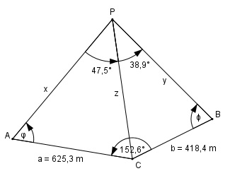

Aufgabe 200 3 Punkte A, B und C sind durch die Entfernungen AC = 625,3 m, CB = 418,4 m und den Winkel ∡ ACB = 152,6° festgelegt. Um die Entfernungen PA = x, PB = y und PC = z zu bestimmen, sind die Winkel CPA = 47,5° und CPB = 38,9° ermittelt worden. Berechnen Sie x, y und z.

Im Dreieck ACP: Sinussatz: z a ------- = ------- |*sin φ sin φ sin α a * sin φ z = ------------- sin α Im Dreieck CBP: Sinussatz: z b ------- = ------- |*sin ψ sin ψ sin β b * sin ψ z = ------------ sin β a * sin φ b * sin ψ ------------ = ----------- |*sin α sin α sin β b * sin ψ * sin α a * sin φ = -------------------- |:sin ψ sin β a * sin φ b * sin α ------------ = ------------ |:a sin ψ sin β sin φ b * sin α ------- = ------------ = k sin ψ a * sin β 418,4 m * sin 47,5° k = ----------------------- = 625,3 m * sin 38,9° 418,4 m * 0,7373 = ------------------- = 0,7856 625,3 m * 0,628 sin φ -------- = k |*sin ψ sin ψ sin φ = k * sin ψ |-sin ψ sin φ - sin ψ = k * sin ψ - sin ψ sin φ - sin ψ = sin ψ * (k – 1) sin φ = k * sin ψ | +sin ψ sin φ + sin ψ = k * sin ψ + sin ψ sin φ + sin ψ = sin ψ * (k + 1) sin φ - sin ψ sin ψ * (k – 1) --------------- = ----------------- sin φ + sin ψ sin ψ * (k + 1) sin φ - sin ψ k – 1 ----------------- = ------- sin φ + sin ψ k + 1 Additionstheoreme: φ + ψ φ - ψ sin φ - sin ψ = 2 * cos ------- * sin ------- 2 2 φ + ψ φ - ψ sin φ + sin ψ = 2 * sin ------- * cos ------- 2 2 φ + ψ φ - ψ 2 * cos -------- * sin ------- 2 2 k - 1 --------------------------------- = ------- φ + ψ φ - ψ k + 1 2 * sin ------- * cos ------- 2 2 φ + ψ sin -------- 2 φ + ψ -------------- = tan -------- φ + ψ 2 cos ------- 2 φ - ψ tan -------- 2 k - 1 φ + ψ ------------- = ------- |*tan --------- φ + ψ k + 1 2 tan -------- 2 φ - ψ k - 1 φ + ψ tan -------- = ------- * tan -------- 2 k + 1 2 Im Viereck ACBP: φ + ψ = 360° - 152,6° - 47,5° - 38,9° = 121° φ - ψ 0,7856 - 1 121° tan -------- = ------------- * tan ------ = 2 0,7856 + 1 2 0,7856 - 1 = ------------ * 1,7675 0,7856 + 1 φ - ψ φ - ψ tan -------- = -0,2122 --> ------- = -12° |*2 2 2 φ – ψ = -24° φ + ψ = 121° ------------- 2φ = 97° | :2 φ = 48,5° φ + ψ = 121° 48,5° + ψ = 121° |-48,5° ψ = 72,5° Im Dreieck ACP: Sinussatz: z a -------- = ------- |*sin φ sin φ sin α a * sin φ 625,3 m * sin 48,5° z = ------------ = --------------------- = sin α sin 47,5° 625,3 m * 0,749 = ------------------ = 635,2 m 0,7373 Sinussatz: x a -------------------- = ------- |*sin (180°-α – φ) sin (180° - α – φ) sin α a * sin (180° - α – φ) x = ------------------------- = sin α 625,3 m * sin (180° - 47,5° - 48,5°) = ---------------------------------------- = sin 47,5° 625,3 m * sin 84° 625,3 m * 0,9945 = -------------------- = ------------------- = sin 47,5° 0,7373 = 843,4 m Im Dreieck CBP: Sinussatz: y b -------------------- = ------- |*sin (180°-β-ψ) sin (180° - β - ψ) sin β b * sin (180° - β - ψ) y = -------------------------- = sin β 418,4 m * sin (180° - 38,9° - 72,5°) = ---------------------------------------- = sin 38,9° 418,4 m * sin 68,6° 418,4 m * 0,9311 = ---------------------- = ------------------- = sin 38,9° 0,628 = 620,3 m